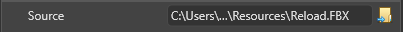
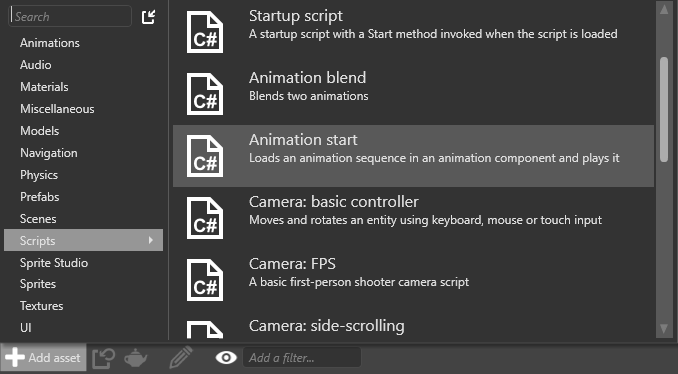
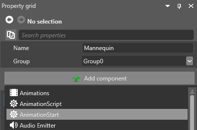
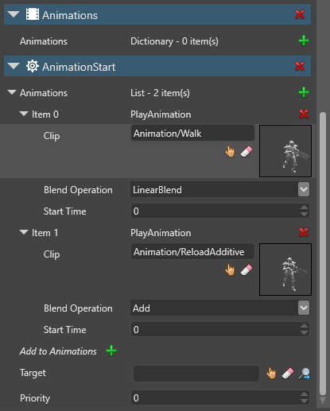

加算アニメーション（Additive Animation）
中級 デザイナー
加算アニメーションとは、差分クリップ (加算アニメーション クリップとも呼ばれます) を使用してアニメーションを結合するプロセスです。

上の例では、左端のアニメーションは［Walk］アニメーションです。右端のアニメーションは［Idle］アニメーションです。中央の 2 つのアニメーションは、それぞれ［Walk］アニメーションと［Idle］アニメーションですが、それに［Reload］アニメーションが加算されています。
つまり、作成する必要があるアニメーションは、［Walk］、［Idle］、［Reload］の 3 つだけです。さらに、他の適切なアニメーション (［Crouch］、［Strafe］、［Run］など) に［Reload］アニメーションを追加できます。これは、メモリの使用量とアニメーションの数を少なく保つのに役立ちます。
差分クリップ
差分クリップは、2 つのアニメーション クリップ（ソースとリファレンス）の間の差異を記述します。
上の［Reload］アニメーションを例にして、これを他のアニメーション クリップに追加するものとします。これがソースクリップ (S) になります。［Reload］アニメーションは主に腕と関係があるので、腕に関係のないアニメーション (静止している、しゃがむ、など) とうまくブレンドできます。このようなアニメーションの 1 つ (たとえば、［Idle］アニメーション) をリファレンスクリップ (R) として使用できます。
Stride は、ソース クリップとリファレンス クリップの差異を計算して、差分クリップ (D) を作成します。差分クリップは、ソース クリップとリファレンス クリップの間の差異をエンコードします。つまり、D = S - R と表すことができます。
差分クリップを使用して、ソース アニメーションとリファレンス アニメーションをブレンドすることができます。また、同じ差分クリップを使用して、ソース アニメーションと他のアニメーションをブレンドすることもできます。他のアニメーションが元のリファレンス クリップとよく似ている場合、2 つのアニメーションはうまくブレンドします。たとえば、差分クリップを使用して、Reload アニメーションを、腕を使用していない任意のアニメーション (しゃがむ、など) に追加できます。
Note
加算アニメーションは、同じスキン メッシュとスケルトンを使用する必要があります。
差分クリップを作成する
［Asset view］(既定では下部) で、［Add asset］をクリックし、［Animations］>［Animation］を選択します。参照ダイアログが開きます。
このアニメーションにはソースが必要ないので、［Cancel］をクリックします。
ソース ファイルなしでアニメーションを作成する確認を求められます。
［Yes］をクリックします。新しい空のアニメーション アセットが、［Asset view］に追加されます。
アセットに識別しやすい名前を付けます。たとえば、他のアニメーションで使用できる再装弾アニメーションを作成する場合は、アセットの名前を［ReloadAdditive］などとします。
［Asset view］(既定では下部のペイン) で、作成したアニメーション アセットを選択します。
［Property grid］(既定では右側) で、［Source］アニメーション クリップを追加します。これは、他のアニメーションに適用するアニメーションです。

Note
アニメーションを参照しているアニメーション アセットではなく、アニメーション自体を含むファイル (たとえば、.fbx などのモデル ファイル) を追加してください。通常、アニメーション ファイルは［Resources］フォルダーに保存されます。
［Type］で、［Difference Clip］を選択します。
［Reference］で、リファレンス クリップとして使用するアニメーションを指定します。これは、Stride が差分クリップを作成するために参照するアニメーションです。

ドロップダウン メニューから［Mode］を選択します。
*［Animation］は、フレーム単位で参照し、ソース アニメーション全体から差分クリップを作成します。 *［FirstFrame］は、ソース アニメーションの最初のフレームだけから、静止したポーズとして差分クリップを作成します。
［Skeleton］の隣で、差分クリップのスケルトンを指定します。
差分クリップとブレンドするすべてのアニメーションで動作するスケルトンを指定する必要があります。ほとんどの場合は、ソース アニメーションとリファレンス アニメーションに使用したものと同じスケルトンを使用する必要があります。
アセット プレビューでアニメーションをプレビューする場合は、 アニメーションに適した［Preview model］を指定します。

Note
アセット プレビューでは、差分クリップで指定したソース アニメーションだけが表示されます。
加算アニメーションを使用する
加算アニメーションは、同じスケルトンおよびスキン メッシュを使用しているアニメーションでのみ使用できます。
［Asset view］(既定では下部のペイン) で、［Add asset］をクリックします。
［Scripts］>［Animation start］を選択します。

［Animation start］は、アニメーションをモデルにロードするために使用できるスタートアップ スクリプトであり、これには加算アニメーションも含まれます。詳細については、「アニメーションのスクリプト」を参照してください。
プロジェクトを再コンパイルして、変更を適用します。
［Scene view］で、アニメーション化するエンティティを選択します。
Note
エンティティをアニメーション化するには、エンティティにモデル コンポーネントが含まれる必要があります。
［Property grid］(既定では右側) で、［Add component］をクリックし、［Animations］を選択します。
アニメーション コンポーネントがエンティティに追加されます。
［Add component］をクリックし、［AnimationStart］スクリプトを選択します。

スクリプトを使用すると、エンティティにロードするアニメーションのリストをカスタマイズできます。
［AnimationStart］プロパティで、［Animations］の隣の
 (［Add a new item to the list］) をクリックします。
(［Add a new item to the list］) をクリックします。［Clip］で、差分クリップで設定したソースアニメーションを指定します。
［Add to Animations］の隣の
(［Add a new item to the list］) をクリックします。アニメーションのプロパティを展開します。［Clip］で、差分クリップで設定したリファレンスアニメーションを指定します。
［Blend Operation］で、［Add］を選択します。

手順を繰り返し、必要なアニメーションをすべて追加します。
